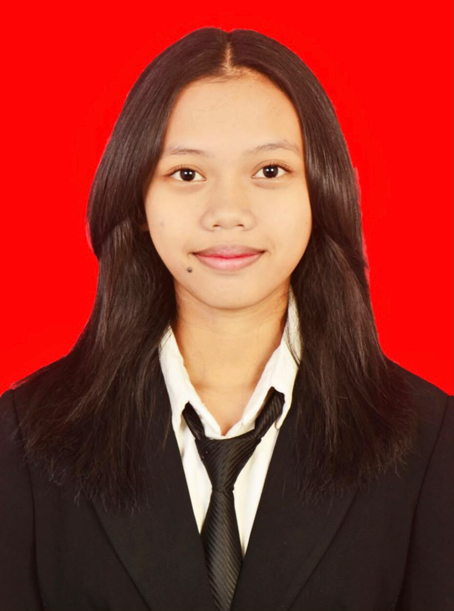

Tatik Catering
Konsep platform digital untuk membantu usaha catering menampilkan layanan, paket, dan informasi pemesanan dengan tampilan yang lebih rapi dan mudah dipahami.
GitHubDeveloper • UI/UX Enthusiast • Aspiring Data Analyst
Membangun pengalaman digital yang rapi, fungsional, dan berbasis data — dengan latar belakang administrasi yang kuat dan ketertarikan mendalam pada teknologi.

GABRIELA VALENTINA RUDIANTO
Memiliki latar belakang Sekolah Menengah Kejuruan dengan Jurusan Manajemen Perkantoran dan kini menempuh kuliah di jurusan Teknologi Informasi Universitas Brawijaya. Terampil dalam administrasi digital, arsip digital, pengolahan data, pengembangan web Front-End dan Back-End, serta desain UI/UX. Saya juga memiliki kemampuan public speaking yang baik, mudah beradaptasi dengan teknologi baru, dan mampu menyelesaikan masalah secara terstruktur.
Administrasi Digital • Pengolahan Data (Data Processing) • UI Design (UI/UX) • Front-End Development • Back-End Development • Analisis Data
Project Management • Teamwork • Communication • Public Speaking • Problem Solving • Manajemen Konflik
Konsep platform digital untuk membantu usaha catering menampilkan layanan, paket, dan informasi pemesanan dengan tampilan yang lebih rapi dan mudah dipahami.
GitHubEksplorasi alat steganografi untuk menyisipkan dan membaca pesan tersembunyi, dengan fokus pada pemahaman konsep keamanan informasi secara praktis.
GitHubDigitalisasi Arsip: Mengelola transisi dan penataan dokumen dari bentuk fisik ke digital untuk meningkatkan efisiensi akses data. Maintenance Database: Memastikan kelengkapan data karyawan dan mengelola dokumen perpanjangan kontrak kerja. Data Processing: Mengoptimalkan pengolahan data SDM menggunakan Microsoft Excel.
Manajemen Program Strategis: Memimpin eksekusi berbagai program kerja besar seperti Bakti Sosial, Penerimaan Mahasiswa Baru, Dies Natalis, dan Studi Banding lintas Universitas. Manajemen Finansial: Mengawasi alokasi dana fakultas sebesar Rp12.000.000. Pengembangan Relasi Eksternal: Membangun hubungan sosial dan pertukaran program kerja dengan KMK Universitas lain.
Manajemen Proyek: Memimpin 41 staf panitia dalam merencanakan dan mengeksekusi turnamen antar jurusan selama 2 minggu di Fakultas Vokasi. Operasional & Logistik: Mengoordinasikan 5 cabang lomba di berbagai lokasi. Manajemen Finansial: Mengoptimalkan anggaran Rp15.000.000 agar seluruh rangkaian acara berjalan efisien.
Manajemen Proyek: Memimpin 54 panitia dalam merencanakan program pengabdian masyarakat di kaki Gunung Kawi selama 2 hari 1 malam. Manajemen Finansial: Mengelola alokasi dana fakultas sebesar Rp2.000.000 serta mengarahkan strategi sponsorship untuk sisa pendanaan.
Menjadi jembatan komunikasi utama dalam menampung, mengolah, dan menyalurkan aspirasi serta keluhan mahasiswa kepada pihak dosen maupun Tenaga Kependidikan.
Office Management (Manajemen Perkantoran) | Juni 2021 – Mei 2024
Juni 2018 – Mei 2021
Terbuka untuk kolaborasi, proyek pengembangan, diskusi UI/UX, maupun kesempatan belajar di bidang data.
Unduh CV (PDF)